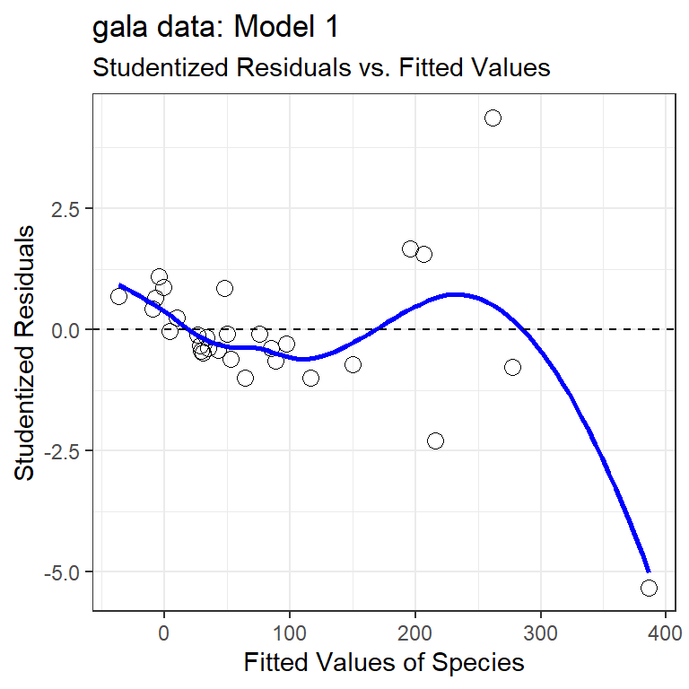
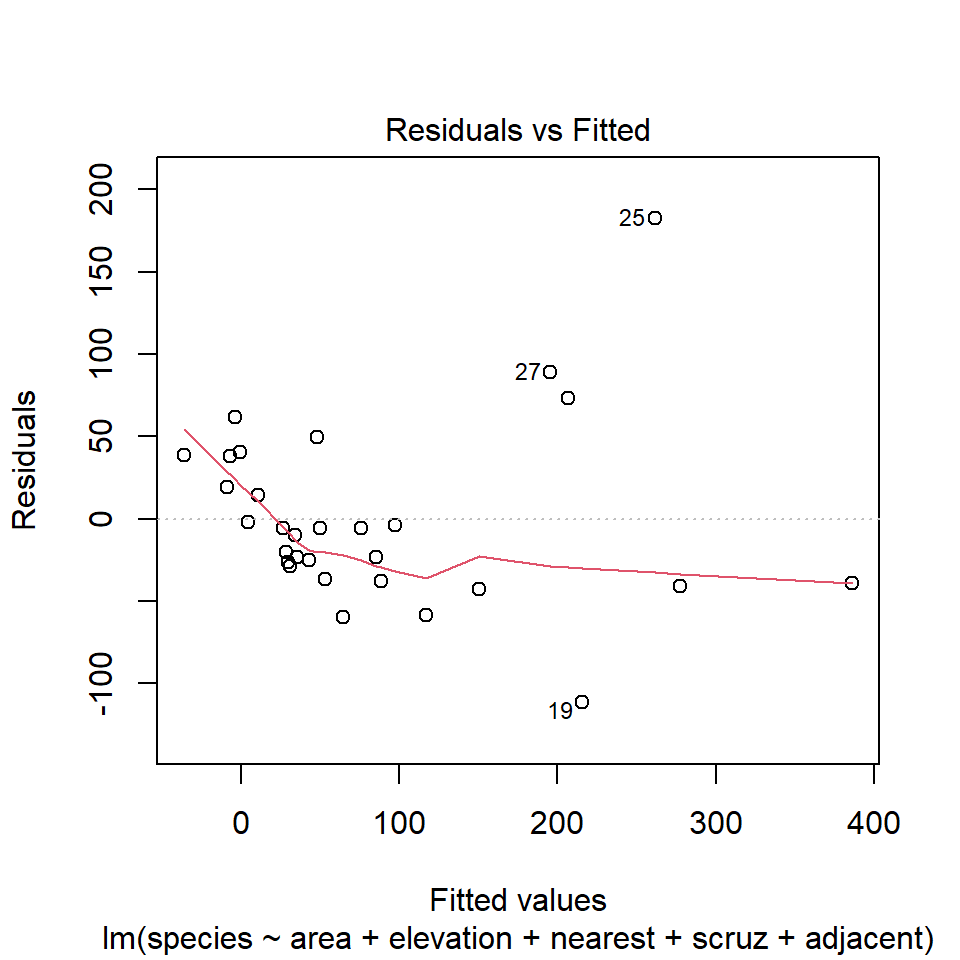
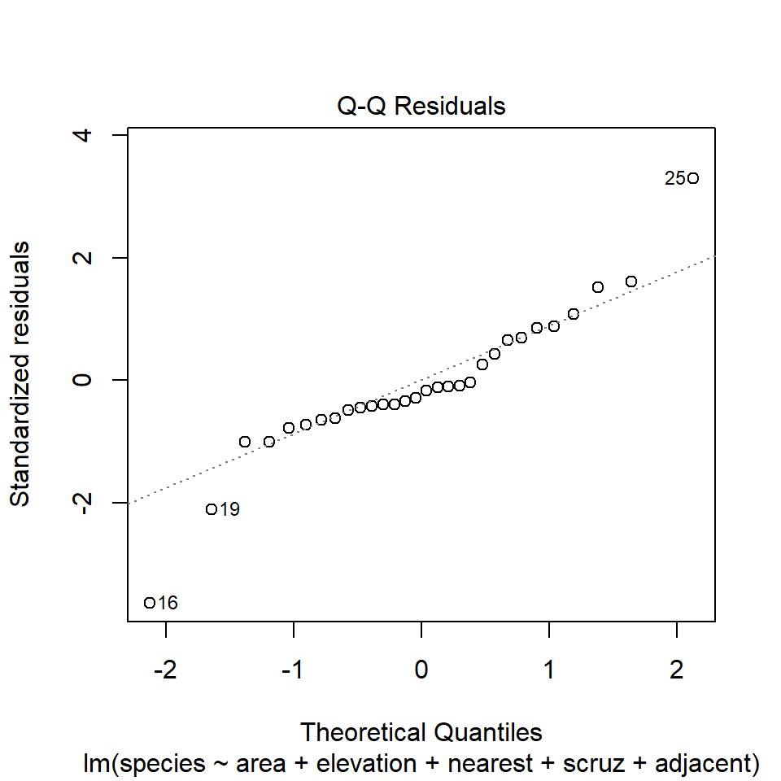
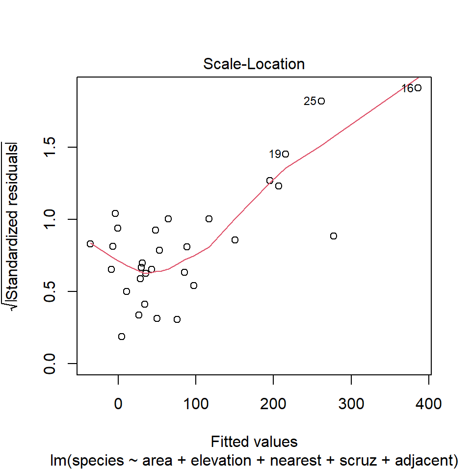
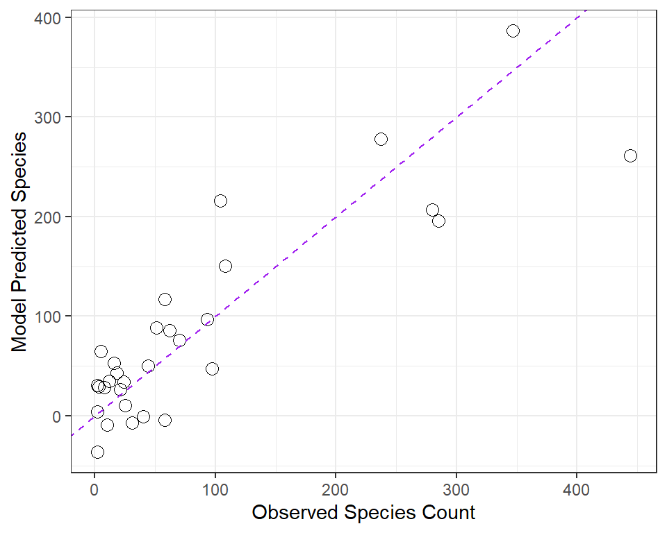
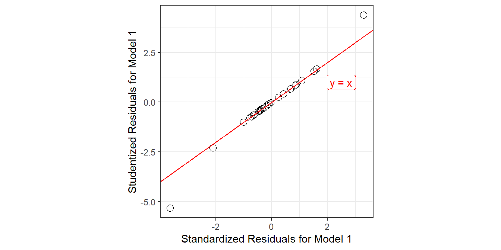

32 Species Found on the Galapagos Islands
32.1 Setup: Packages Used Here
We’ll also use a function from the arm package, and from the Hmisc package.
32.2 A Little Background
The gala data describe describe features of the 30 Galapagos Islands.
gala <- read_csv("data/gala.csv", show_col_types = FALSE)The Galapagos Islands are found about 900 km west of South America: specifically the continental part of Ecuador. The Islands form a province of Ecuador and serve as a national park and marine reserve. They are noted for their vast numbers of unique (or endemic) species and were studied by Charles Darwin during the voyage of the Beagle.
32.2.1 Sources
The data were initially presented by Johnson M and Raven P (1973) Species number and endemism: the Galapagos Archipelago revisited. Science 179: 893-895 and also appear in several regression texts, including my source: Faraway (2015). Note that Faraway filled in some missing data to simplify things a bit. A similar version of the data is available as part of the faraway library in R, but I encourage you to use the version I supply on our web site.
32.2.2 Variables in the gala data frame
- id = island identification code
- island = island name
- species = our outcome, the number of species found on the island
- area = the area of the island, in square kilometers
- elevation = the highest elevation of the island, in meters
- nearest = the distance from the nearest island, in kilometers
- scruz = the distance from Santa Cruz Island, in kilometers. Santa Cruz is the home to the largest human population in the Islands, and to the town of Puerto Ayora.
- adjacent = the area of the adjacent island, in square kilometers
gala# A tibble: 30 × 8
id island species area elevation nearest scruz adjacent
<dbl> <chr> <dbl> <dbl> <dbl> <dbl> <dbl> <dbl>
1 1 Baltra 58 25.1 346 0.6 0.6 1.84
2 2 Bartolome 31 1.24 109 0.6 26.3 572.
3 3 Caldwell 3 0.21 114 2.8 58.7 0.78
4 4 Champion 25 0.1 46 1.9 47.4 0.18
5 5 Coamano 2 0.05 77 1.9 1.9 904.
6 6 Daphne.Major 18 0.34 119 8 8 1.84
7 7 Daphne.Minor 24 0.08 93 6 12 0.34
8 8 Darwin 10 2.33 168 34.1 290. 2.85
9 9 Eden 8 0.03 71 0.4 0.4 18.0
10 10 Enderby 2 0.18 112 2.6 50.2 0.1
# ℹ 20 more rowsHmisc::describe(gala) # check for missing and inexplicable valuesgala
8 Variables 30 Observations
--------------------------------------------------------------------------------
id
n missing distinct Info Mean Gmd .05 .10
30 0 30 1 15.5 10.33 2.45 3.90
.25 .50 .75 .90 .95
8.25 15.50 22.75 27.10 28.55
lowest : 1 2 3 4 5, highest: 26 27 28 29 30
--------------------------------------------------------------------------------
island
n missing distinct
30 0 30
lowest : Baltra Bartolome Caldwell Champion Coamano
highest: SantaFe SantaMaria Seymour Tortuga Wolf
--------------------------------------------------------------------------------
species
n missing distinct Info Mean Gmd .05 .10
30 0 27 0.999 85.23 109.5 2.0 2.9
.25 .50 .75 .90 .95
13.0 42.0 96.0 280.5 319.1
lowest : 2 3 5 8 10, highest: 237 280 285 347 444
--------------------------------------------------------------------------------
area
n missing distinct Info Mean Gmd .05 .10
30 0 29 1 261.7 478.6 0.0390 0.0770
.25 .50 .75 .90 .95
0.2575 2.5900 59.2375 578.5460 782.6215
Value 0 50 100 150 550 600 900 4650
Frequency 21 2 1 1 2 1 1 1
Proportion 0.700 0.067 0.033 0.033 0.067 0.033 0.033 0.033
For the frequency table, variable is rounded to the nearest 50
--------------------------------------------------------------------------------
elevation
n missing distinct Info Mean Gmd .05 .10
30 0 30 1 368 411.1 47.35 68.80
.25 .50 .75 .90 .95
97.75 192.00 435.25 868.20 1229.40
lowest : 25 46 49 71 76, highest: 777 864 906 1494 1707
--------------------------------------------------------------------------------
nearest
n missing distinct Info Mean Gmd .05 .10
30 0 22 0.997 10.06 13.73 0.445 0.590
.25 .50 .75 .90 .95
0.800 3.050 10.025 34.100 40.205
lowest : 0.2 0.4 0.5 0.6 0.7 , highest: 16.5 29.1 34.1 45.2 47.4
--------------------------------------------------------------------------------
scruz
n missing distinct Info Mean Gmd .05 .10
30 0 29 1 56.98 65.17 0.49 0.60
.25 .50 .75 .90 .95
11.02 46.65 81.08 97.73 193.90
lowest : 0 0.4 0.6 1.9 8 , highest: 93.1 95.3 119.6 254.7 290.2
--------------------------------------------------------------------------------
adjacent
n missing distinct Info Mean Gmd .05 .10
30 0 21 0.998 261.1 477.8 0.10 0.10
.25 .50 .75 .90 .95
0.52 2.59 59.24 578.55 782.62
Value 0 50 100 550 600 900 4650
Frequency 21 2 2 2 1 1 1
Proportion 0.700 0.067 0.067 0.067 0.033 0.033 0.033
For the frequency table, variable is rounded to the nearest 50
--------------------------------------------------------------------------------32.3 DTDP: A Scatterplot Matrix
After missingness and range checks, the first step in any data analysis problem is to draw the picture. The most useful picture for me in thinking about a regression problem with a reasonably small number of predictors is a scatterplot matrix.
Our outcome, that we are predicting here is the number of species.
We’ll use five predictors:
areaelevationnearest-
scruzand -
adjacent.
32.3.1 Questions about the Scatterplot Matrix
In this Chapter, I will provide you with nearly 100 questions that you should be able to answer in light of the output provided. Here are the first few. If you have questions about how to interpret the output in light of these questions, please ask about them on Piazza or in TA office hours.
- What are we looking for in the scatterplots in the bottom row?
- What can we learn from the Pearson correlations in the right column?
- How do the density plots help increase our understanding of the data?
- What about the scatterplots that are not in the top row?
- What can we learn from the Pearson correlations that compare predictors?
32.4 Fitting A “Kitchen Sink” Linear Regression model
Next, we’ll fit a multiple linear regression model to predict the number of species based on the five predictors included in the gala data frame (and scatterplot matrix above.) We use the lm command to fit the linear model, and use what is called Wilkinson-Rogers notation to specify the model.
model1 <- lm(species ~ area + elevation + nearest + scruz +
adjacent, data=gala)Here are the results of running tidy() and glance() from the broom package on model1.
| term | estimate | std.error | statistic | p.value |
|---|---|---|---|---|
| (Intercept) | 7.068 | 19.154 | 0.369 | 0.715 |
| area | -0.024 | 0.022 | -1.068 | 0.296 |
| elevation | 0.319 | 0.054 | 5.953 | 0.000 |
| nearest | 0.009 | 1.054 | 0.009 | 0.993 |
| scruz | -0.241 | 0.215 | -1.117 | 0.275 |
| adjacent | -0.075 | 0.018 | -4.226 | 0.000 |
glance(model1) |>
select(r.squared, adj.r.squared, sigma, statistic,
p.value, df, df.residual, nobs, AIC, BIC) |>
kable(digits = c(3, 3, 1, 1, 3, 0, 0, 0, 1, 1))| r.squared | adj.r.squared | sigma | statistic | p.value | df | df.residual | nobs | AIC | BIC |
|---|---|---|---|---|---|---|---|---|---|
| 0.766 | 0.717 | 61 | 15.7 | 0 | 5 | 24 | 30 | 339.1 | 348.9 |
Here is the result of running summary on model1.
summary(model1)
Call:
lm(formula = species ~ area + elevation + nearest + scruz + adjacent,
data = gala)
Residuals:
Min 1Q Median 3Q Max
-111.679 -34.898 -7.862 33.460 182.584
Coefficients:
Estimate Std. Error t value Pr(>|t|)
(Intercept) 7.068221 19.154198 0.369 0.715351
area -0.023938 0.022422 -1.068 0.296318
elevation 0.319465 0.053663 5.953 3.82e-06 ***
nearest 0.009144 1.054136 0.009 0.993151
scruz -0.240524 0.215402 -1.117 0.275208
adjacent -0.074805 0.017700 -4.226 0.000297 ***
---
Signif. codes: 0 '***' 0.001 '**' 0.01 '*' 0.05 '.' 0.1 ' ' 1
Residual standard error: 60.98 on 24 degrees of freedom
Multiple R-squared: 0.7658, Adjusted R-squared: 0.7171
F-statistic: 15.7 on 5 and 24 DF, p-value: 6.838e-0732.4.1 Questions about the Kitchen Sink Model Summaries
What conclusions can we draw from the summary output for this model? Specifically …
- What is being predicted? What is the prediction equation?
- How do we interpret the
elevationestimate of 0.32? - How do we interpret the
areaestimate of -0.02? - How do we interpret the intercept estimate of 7.07?
- Overall, does our
model1add detectable predictive value (say, at the 5% significance level) over the simplest possible model for this outcome (the model using the intercept term alone)? - What proportion of the variation in
speciescounts does this model account for? - What does the residual standard error mean in this context?
- What can we learn from the standard errors in the coefficient output?
- What can we learn from the
tvalues andPr(>|t|)values in the summary output? - How should we interpret the meaning of the
Adjusted R-squaredvalue?
32.5 Finding Confidence Intervals for our Coefficient Estimates
Of course, we can find these intervals in several ways. One approach uses tidy() from the broom package.
tidy(model1, conf.int = TRUE, conf.level = 0.95) |>
select(term, estimate, std.error, conf.low, conf.high) |>
kable(digits = 3)| term | estimate | std.error | conf.low | conf.high |
|---|---|---|---|---|
| (Intercept) | 7.068 | 19.154 | -32.464 | 46.601 |
| area | -0.024 | 0.022 | -0.070 | 0.022 |
| elevation | 0.319 | 0.054 | 0.209 | 0.430 |
| nearest | 0.009 | 1.054 | -2.166 | 2.185 |
| scruz | -0.241 | 0.215 | -0.685 | 0.204 |
| adjacent | -0.075 | 0.018 | -0.111 | -0.038 |
Another approach would be:
confint(model1, level = 0.95) 2.5 % 97.5 %
(Intercept) -32.4641006 46.60054205
area -0.0702158 0.02233912
elevation 0.2087102 0.43021935
nearest -2.1664857 2.18477363
scruz -0.6850926 0.20404416
adjacent -0.1113362 -0.0382734432.5.1 Questions about the Confidence Intervals
- What can we learn from the provided confidence interval for
elevation? - How do the confidence interval results here compare to the t tests we saw previously?
32.6 Measuring Collinearity - the Variance Inflation Factor
The variance inflation factor (abbreviated VIF) can be used to quantify the impact of multicollinearity in a linear regression model.
The VIF is sometimes interpreted by taking its square root, and then interpreting the result as telling you how much larger the standard error for that coefficient is, as compared to what it would be if that variable were uncorrelated with the other predictors.
In R, the vif function from the car library, when applied to a linear regression model, specifies the variance inflation factors for each of the model’s coefficients, as follows.
vif(model1) area elevation nearest scruz adjacent
2.928145 3.992545 1.766099 1.675031 1.826403 So, for instance, the VIF of 3.99 for elevation implies that the standard error of the elevation coefficient is approximately 2 times larger than it would be if elevation was uncorrelated with the other predictors.
I will look closely at any VIF value that is greater than 5, although some people use a cutoff of 10.
- Another collinearity measure called tolerance is simply 1/
VIF. - For example, the tolerance for
elevationwould be 0.25, and the cutoff for a potentially problematic tolerance is either 0.2 or lower, or 0.1 or lower.
To calculate the VIF for a predictor \(x_1\), use all of the other predictors to predict \(x_1\) and find the multiple \(R^2\) value.
-
VIFfor \(x_1\) = 1 / (1 - \(R^2_{x_1 | others}\)), andtolerance= (1 - \(R^2_{x_1 | others}\)).
32.7 Global (F) Testing of Overall Significance
Our Galapagos Islands species count regression model (called model1) predicts the count of an island’s species using area, elevation, nearest, scruz and adjacent.
Call:
lm(formula = species ~ 1, data = gala)
Residuals:
Min 1Q Median 3Q Max
-83.23 -72.23 -43.23 10.77 358.77
Coefficients:
Estimate Std. Error t value Pr(>|t|)
(Intercept) 85.23 20.93 4.072 0.000328 ***
---
Signif. codes: 0 '***' 0.001 '**' 0.01 '*' 0.05 '.' 0.1 ' ' 1
Residual standard error: 114.6 on 29 degrees of freedomanova(model1, nullmodel)Analysis of Variance Table
Model 1: species ~ area + elevation + nearest + scruz + adjacent
Model 2: species ~ 1
Res.Df RSS Df Sum of Sq F Pr(>F)
1 24 89231
2 29 381081 -5 -291850 15.699 6.838e-07 ***
---
Signif. codes: 0 '***' 0.001 '**' 0.01 '*' 0.05 '.' 0.1 ' ' 132.7.1 Questions about the Global Test via ANOVA
- How do we interpret the null model fit above?
- What are the hypotheses being tested by this ANOVA output?
- What conclusions can we draw from the ANOVA output presented here?
- Where do we find information regarding the result for the previous question in the summary output for the linear model?
- How would we set up an ANOVA model to test whether the “kitchen sink” model’s predictive value would be meaningfully impacted by removing the
adjacentpredictor from the model? - Where do we find information regarding these result for the previous question in the
summaryoutput for the linear model? - How would we set an ANOVA model to test whether a model with
areaonly would be a detectable improvement over the null model?
32.8 Sequential Testing in a Regression Model with ANOVA
anova(model1)Analysis of Variance Table
Response: species
Df Sum Sq Mean Sq F value Pr(>F)
area 1 145470 145470 39.1262 1.826e-06 ***
elevation 1 65664 65664 17.6613 0.0003155 ***
nearest 1 29 29 0.0079 0.9300674
scruz 1 14280 14280 3.8408 0.0617324 .
adjacent 1 66406 66406 17.8609 0.0002971 ***
Residuals 24 89231 3718
---
Signif. codes: 0 '***' 0.001 '**' 0.01 '*' 0.05 '.' 0.1 ' ' 132.8.1 Questions about Sequential Testing and ANOVA
- What conclusions can we draw from the
arearow in the output above? - What conclusions can we draw from the
elevationrow? - Does
nearestadd statistically detectable predictive value to the model includingareaandelevation, but none of the other predictors? - Does
adjacentadd detectable predictive value as last predictor into the model? - Where else in the regression output can we find the answer to the previous question?
- How does the mean square of the residuals (3718) relate to the residual standard error?
- What percentage of the variation in the species counts is accounted for by area alone?
- What percentage of the variation explained by the kitchen sink model would also be accounted for in a two-predictor regression model including
areaandelevationalone? - How could we use the original linear model output to whether a model using the four predictors that appear most promising here would be statistically meaningfully worse than the full model with all five predictors?
- What does the following output do differently than the output above, and why is that potentially useful here? Why is the p value for
scruzso different?
Analysis of Variance Table
Response: species
Df Sum Sq Mean Sq F value Pr(>F)
area 1 145470 145470 39.1262 1.826e-06 ***
elevation 1 65664 65664 17.6613 0.0003155 ***
adjacent 1 73171 73171 19.6804 0.0001742 ***
scruz 1 7544 7544 2.0291 0.1671885
nearest 1 0 0 0.0001 0.9931506
Residuals 24 89231 3718
---
Signif. codes: 0 '***' 0.001 '**' 0.01 '*' 0.05 '.' 0.1 ' ' 1- Consider the ANOVA below, run on a new model with
elevationafteradjacent. What happens? Why?
Analysis of Variance Table
Response: species
Df Sum Sq Mean Sq F value Pr(>F)
area 1 145470 145470 39.1262 1.826e-06 ***
adjacent 1 2850 2850 0.7666 0.3900
elevation 1 135985 135985 36.5751 3.030e-06 ***
scruz 1 7544 7544 2.0291 0.1672
nearest 1 0 0 0.0001 0.9932
Residuals 24 89231 3718
---
Signif. codes: 0 '***' 0.001 '**' 0.01 '*' 0.05 '.' 0.1 ' ' 132.9 An ANOVA table for the Model as a Whole
It’s probably also worthwhile to compute a completed ANOVA table for the model as a whole. All elements are in the ANOVA tables above, or the model summary.
| Group | DF | SS | MS | F | P |
|---|---|---|---|---|---|
| Regression | 5 | 291849 | 58369.8 | 15.7 | 6.838e-07 |
| Residuals | 24 | 89231 | 3718.0 | ||
| Total | 29 | 381080 |
- How did I determine the Mean Square for the Regression model?
- What conclusions can we draw from this ANOVA table?
32.10 Assumption Checking for our Galapagos Islands models
Remember that the key assumptions of multiple linear regression are:
- [Linearity] We have also assumed that the structural part of the model is correctly specified (we’ve included all the predictors that need to be in the model, and expressed them in the most appropriate manner, and we’ve left out any predictors that don’t need to be in the model.)
- [Normality] The regression makes errors that come from a Normal distribution
- [Homoscedasticity = Constant Variance] The regression makes errors that come from a distribution with constant variance at all predictor levels.
- [Independence] The regression errors are independent of each other.
In addition, we need to realize that sometimes a few observations may be particularly problematic. For instance:
- An observation may simply not fit the model well (i.e. it creates a large residual)
- An observation may have high leverage over the fit of the model (this happens with observations that have an unusual combination of predictor values, in particular)
- An observation may actually have high influence on the model (in the sense that whether they are included or excluded has a large impact on the model’s fit, and the value of its parameter estimates.)
- Or any combination of high residual, leverage and influence may occur.
So it is important to check the assumptions that we can with the data we have. Our most important tools are plots and other summaries of residuals, and what are called influence statistics.
32.11 My First Plot: Studentized Residuals vs. Fitted Values
The first diagnostic plot I usually draw for a multiple regression is a scatterplot of the model’s studentized residuals (on the vertical axis) vs. the model’s fitted values (on the horizontal.) This plot can be used to assess potential non-linearity, non-constant variance, and non-Normality in the residuals.
gala$stures <- rstudent(model1); gala$fits <- fitted(model1)
ggplot(gala, aes(x = fits, y = stures)) +
geom_point(size = 3, shape = 1) +
geom_smooth(col = "blue", se = FALSE, method = "loess",
formula = y ~ x, weight = 0.5) +
geom_hline(aes(yintercept = 0), linetype = "dashed") +
labs(x = "Fitted Values of Species",
y = "Studentized Residuals",
title = "gala data: Model 1",
subtitle = "Studentized Residuals vs. Fitted Values")
32.11.1 Questions about Studentized Residuals vs. Fitted Values
- Consider the point at bottom right. What can you infer about this observation?
- Why did I include the dotted horizontal line at Studentized Residual = 0?
- What is the purpose of the thin blue line?
- What does this plot suggest about the potential for outliers in the residuals?
32.12 Automatic Regression Diagnostics for Model 1
32.13 Model 1: Diagnostic Plot 1
As we’ve seen, the first of R’s automated diagnostic plots for a linear model is a plot of the residuals vs. the fitted values.
plot(model1, which=1)
32.13.1 Questions about Diagnostic Plot 1: Residuals vs. Fitted Values
- What type of regression residuals is R plotting here?
- Which points are identified by numbers here?
- Why did R include the gray dotted line at Residual = 0?
- What is the purpose of the thin red line?
- What can you tell about the potential for outliers in the model 1 residuals from the plot?
- What are we looking for in this plot that would let us conclude there were no important assumption violations implied by it? Which assumptions can we assess with it?
- What would we do if we saw a violation of assumptions in this plot?
- What are the key differences between this plot and the one I showed earlier?
32.14 Diagnostic Plot 2: Assessing Normality
The second diagnostic plot prepared by R for any linear model using the plot command is a Normal Q-Q plot of the standardized residuals from the model.
plot(model1, which=2)
32.14.1 Questions about Diagnostic Plot 2: Normal Plot of Standardized Residuals
- Which points are being identified here by number?
- Which assumption(s) of multiple regression does this plot help us check?
- What are we looking for in this plot that would let us conclude there were no important assumption violations implied by it?
- What would we do if we saw a violation of assumptions in this plot?
We could also look at studentized residuals, or we could apply a more complete set of plots and other assessments of normality. Usually, I don’t.
32.15 Diagnostic Plot 3: Assessing Constant Variance
The third diagnostic plot prepared by R for any linear model using the plot command shows the square root of the model’s standardized residuals vs. its fitted values. R calls this a scale-location plot.
plot(model1, which=3)
32.15.1 Questions about Diagnostic Plot 3: Scale-Location Plot
- Which points are being identified here by number?
- Which assumption(s) of multiple regression does this plot help us check?
- What is the role of the thin red line in this plot?
- What are we looking for in this plot that would let us conclude there were no important assumption violations implied by it?
- What would we do if we saw a violation of assumptions in this plot?
32.16 Obtaining Fitted Values and Residuals from a Model
We can use the augment() function from the broom package to find the predictions made by the regression model for each of the observations used to create the model.
[1] "species" "area" "elevation" "nearest" "scruz"
[6] "adjacent" ".fitted" ".resid" ".hat" ".sigma"
[11] ".cooksd" ".std.resid"Here, we obtain
- predicted (fitted) values for the outcome, in
.fitted - residuals (observed - fitted) values for each observation, in
.resid - leverage values in
.hatfor each observation - standard errors associated with each observation in
.sigma - Cook’s distance values for each observation in
.cooksd - standardized residuals in
.std.resid
Here, for instance, are the first few rows.
| species | area | elevation | nearest | scruz | adjacent | .fitted | .resid | .hat | .sigma | .cooksd | .std.resid |
|---|---|---|---|---|---|---|---|---|---|---|---|
| 58 | 25.09 | 346 | 0.6 | 0.6 | 1.84 | 116.73 | -58.73 | 0.08 | 60.97 | 0.01 | -1.00 |
| 31 | 1.24 | 109 | 0.6 | 26.3 | 572.33 | -7.27 | 38.27 | 0.09 | 61.72 | 0.01 | 0.66 |
| 3 | 0.21 | 114 | 2.8 | 58.7 | 0.78 | 29.33 | -26.33 | 0.06 | 62.03 | 0.00 | -0.45 |
| 25 | 0.10 | 46 | 1.9 | 47.4 | 0.18 | 10.36 | 14.64 | 0.07 | 62.21 | 0.00 | 0.25 |
| 2 | 0.05 | 77 | 1.9 | 1.9 | 903.82 | -36.38 | 38.38 | 0.17 | 61.66 | 0.02 | 0.69 |
| 18 | 0.34 | 119 | 8.0 | 8.0 | 1.84 | 43.09 | -25.09 | 0.07 | 62.05 | 0.00 | -0.43 |
32.16.1 Questions about Fitted Values
- Verify that the first fitted value [116.73] is in fact what you get for Baltra (observation 1) when you apply the regression equation:
species = 7.07 - 0.02 area + 0.32 elevation
+ 0.009 nearest - 0.24 scruz - 0.07 adjacentWe can compare these predictions to the actual observed counts of the number of species on each island. Subtracting the fitted values from the observed values gives us the residuals, as does the resid function.
32.16.2 Questions about Residuals
- What does a positive residual indicate?
- What does a negative residual indicate?
- The standard deviation of the full set of 30 residuals turns out to be 55.47. How does this compare to the residual standard error?
- The command below identifies Santa Cruz. What does it indicate about Santa Cruz, specifically?
- From the results below, what is the
model1residual for Santa Cruz? What does this imply about thespeciesprediction made by Model 1 for Santa Cruz?
25
25 1 2 3 4 5 6 7 8 9 10
-58.73 38.27 -26.33 14.64 38.38 -25.09 -9.92 19.02 -20.31 -28.79
11 12 13 14 15 16 17 18 19 20
49.34 -3.99 62.03 -59.63 40.50 -39.40 -37.69 -2.04 -111.68 -42.48
21 22 23 24 25 26 27 28 29 30
-23.08 -5.55 73.05 -40.68 182.58 -23.38 89.38 -5.81 -36.94 -5.70 # A tibble: 1 × 10
id island species area elevation nearest scruz adjacent stures fits
<dbl> <chr> <dbl> <dbl> <dbl> <dbl> <dbl> <dbl> <dbl> <dbl>
1 25 SantaCruz 444 904. 864 0.6 0 0.52 4.38 261.32.17 Relationship between Fitted and Observed Values
We’ve already seen that the fitted command can produce predicted values for each observations used to develop a regression model, and that the resid command can produce the residuals (observed - predicted) for those same observations. Returning to our original model1, let’s compare the fitted values (stored earlier in fits) to the observed values.
ggplot(gala, aes(x = species, y = fits)) +
geom_point(size = 3, shape = 1) +
geom_abline(intercept = 0, slope = 1,
col = "purple", linetype = "dashed") +
labs(x = "Observed Species Count",
y = "Model Predicted Species")
32.17.1 Questions about Fitted and Observed Values
- Why did I draw the dotted purple line with y-intercept 0 and slope 1? Why is that particular line of interest?
- If a point on this plot is in the top left here, above the dotted line, what does that mean?
- If a point is below the dotted line here, what does that mean?
- How does this plot display the size of an observation’s residual?
32.18 Standardizing Residuals
We’ve already seen that the raw residuals from a regression model can be obtained using the resid function. Residuals are defined to have mean 0. This is one of the requirements of the least squares procedure for estimating a linear model, and their true standard deviation is effectively estimated using the residual standard error.
There are two additional types of residuals for us to be aware of: standardized residuals, and studentized (sometimes called externally standardized, or jackknife) residuals. Each approach standardizes the residuals by dividing them by a standard deviation estimate, so the resulting residuals should have mean 0 and standard deviation 1 if assumptions hold.
-
Standardized residuals are the original (raw) residuals, scaled by a standard deviation estimate developed using the entire data set. This summary is part of what is provided by
augmentfrom thebroompackage, as.std.resid. - Studentized residuals are the original (raw) residuals, scaled by a standard deviation estimate developed using the entire data set EXCEPT for this particular observation.
The rstudent function, when applied to a linear regression model, will the model’s studentized residuals.
gala_aug <- gala_aug |>
mutate(.stu.resid = rstudent(model1))
ggplot(gala_aug, aes(x = .std.resid,
y = .stu.resid)) +
geom_point(size = 3, pch = 1) +
geom_abline(intercept = 0, slope = 1, col = "red") +
geom_label(x = 2.5, y = 1,
label = "y = x", col = "red") +
theme(aspect.ratio = 1) +
labs(x = "Standardized Residuals for Model 1",
y = "Studentized Residuals for Model 1")
32.18.1 Questions about Standardized and Studentized Residuals
- From the plot above, what conclusions can you draw about the two methods of standardizing residuals as they apply in the case of our model1?
32.19 Influence Measures for Multiple Regression
R can output a series of influence measures for a regression model. Let me show you all of the available measures for model 1, but just for three of the data points - #1 (which is not particularly influential) and #12 and #16 (which are).
First, we’ll look at the raw data:
gala[c(1,12,16),]# A tibble: 3 × 10
id island species area elevation nearest scruz adjacent stures fits
<dbl> <chr> <dbl> <dbl> <dbl> <dbl> <dbl> <dbl> <dbl> <dbl>
1 1 Baltra 58 25.1 346 0.6 0.6 1.84 -1.00 117.
2 12 Fernandina 93 634. 1494 4.3 95.3 4669. -0.286 97.0
3 16 Isabela 347 4669. 1707 0.7 28.1 634. -5.33 386. And then, we’ll gather the output available in the influence.measures function.
influence.measures(model1)Here’s an edited version of this output…
Influence measures of
lm(formula = species ~ area + elevation + nearest + scruz + adjacent,
data = gala) :
dfb.1_ dfb.area dfb.elvt dfb.nrst dfb.scrz dfb.adjc
1 -0.15064 0.13572 -0.122412 0.07684 0.084786 1.14e-01
12 0.16112 0.16395 -0.122578 0.03093 -0.059059 -8.27e-01
16 -1.18618 -20.87453 4.885852 0.36713 -1.022431 -8.09e-01
dffit cov.r cook.d hat inf
1 -0.29335 1.0835 1.43e-02 0.0787
12 -1.24249 25.1101 2.68e-01 0.9497 *
16 -29.59041 0.3275 6.81e+01 0.9685 *This output presents dfbetas for each coefficient, followed by dffit statistics, covariance ratios, Cook’s distance and leverage values (hat) along with an indicator of influence.
We’ll consider each of these elements in turn.
32.20 DFBETAs
The first part of the influence measures output concerns what are generally called dfbetas …
| id | island | dfb.1_ | dfb.area | dfb.elvt | dfb.nrst | dfb.scrz | dfb.adjc |
|---|---|---|---|---|---|---|---|
| 1 | Baltra | -0.151 | 0.136 | -0.122 | 0.077 | 0.085 | 0.114 |
| 12 | Fernandina | 0.161 | 0.164 | -0.123 | 0.031 | -0.059 | -0.827 |
| 16 | Isabela | -1.186 | -20.875 | 4.886 | 0.367 | -1.022 | -0.809 |
The dfbetas look at a standardized difference in the estimate of a coefficient (slope) that will occur if the specified point (here, island) is removed from the data set.
- Positive values indicate that deleting the point will yield a smaller coefficient.
- Negative values indicate that deleting the point will yield a larger coefficient.
- If the absolute value of the dfbeta is greater than \(2 / \sqrt{n}\), where \(n\) is the sample size, then the
dfbetais considered to be large.
In this case, our cutoff would be \(2 / \sqrt{30}\) or 0.365, so that the Isabela dfbeta values are all indicative of large influence. Essentially, if we remove Isabela from the data, and refit the model, our regression slopes will change a lot (see below). Fernandina has some influence as well, especially on the adjacent coefficient.
| Predictor | Coefficient (p) all 30 islands | Coefficient (p) without Isabela |
|---|---|---|
| Intercept | 7.07 (p = 0.72) | 22.59 (p = 0.11) |
area |
-0.02 (p = 0.30) | 0.30 (p < 0.01) |
elevation |
0.32 (p < 0.01) | 0.14 (p < 0.01) |
nearest |
0.01 (p = 0.99) | -0.26 (p = 0.73) |
scruz |
-0.24 (p = 0.28) | -0.09 (p = 0.55) |
adjacent |
-0.08 (p < 0.01) | -0.07 (p < 0.01) |
After the dfbetas, the influence.measures output presents dffit, covariance ratios, Cook’s distance and leverage values (hat) for each observation, along with an indicator of influence.
id island dffit cov.r cook.d hat inf
1 Baltra -0.29335 1.0835 1.43e-02 0.0787
12 Fernandina -1.24249 25.1101 2.68e-01 0.9497 *
16 Isabela -29.59041 0.3275 6.81e+01 0.9685 *32.21 Cook’s d or Cook’s Distance
The main measure of influence is Cook’s Distance, also called Cook’s d. Cook’s d provides a summary of the influence of a particular point on all of the regression coefficients. It is a function of the standardized residual and the leverage. We’ve seen that the augment() function in the broom package provides both Cook’s distance and leverage values for all observations in our model.
- Cook’s distance values greater than 1 are generally indicators of high influence.
- Obviously, Isabela (with a value of Cook’s d = 68.1) is a highly influential observation by this measure.
32.21.1 Plotting Cook’s Distance
As one of its automated regression diagnostic plots, R will produce an index plot of the Cook’s distance values. Note the relatively enormous influence for island 16 (Isabela).
plot(model1, which = 4)
32.22 DFFITS
A similar measure to Cook’s distance is called DFFITS. The DFFITS value describes the influence of the point on the fitted value. It’s the number of standard deviations that the fitted value changes if the observation is removed. This is defined as a function of the studentized residual and the leverage.
- If the absolute value of
DFFITSis greater than 2 times \(\sqrt{p / n-p}\), where p is the number of predictors (not including the intercept), we deem the observation influential. - For the
galadata, we’d consider any point withDFFITSgreater than 2 x \(\sqrt{5 / (30-5)}\) = 0.894 to be influential by this standard, since n = 30 and we are estimating p = 5 slopes in our model. This is true of both Fernandina and Isabela.
32.23 Covariance Ratio
The covariance ratio cov.r indicates the role of the observation on the precision of estimation. If cov.r is greater than 1, then this observation improves the precision, overall, and if it’s less than 1, the observation drops the precision of estimation, and these are the points about which we’ll be most concerned.
- As with most of our other influence measures, Isabela appears to be a concern.
32.24 Leverage
The hat value is a measure of leverage. Specifically, this addresses whether or not the point in question is unusual in terms of its combination of predictor values. We’ve seen that the augment() function in the broom package provides leverage values for all observations in our model.
- The usual cutoff for a large leverage value is 2.5 times the average leverage across all observations, where the average leverage is equal to k/n, where n is the number of observations included in the regression model, and k is the number of model coefficients (slopes plus intercept).
- In the
galaexample, we’d regard any observation with a hat value larger than 2.5 x 6/30 = 0.5 to have large leverage. This includes Fernandina and Isabela.
32.24.1 Indicator of Influence
The little asterisk indicates an observation which is influential according to R’s standards for any of these measures. You can take the absence of an asterisk as a clear indication that a point is NOT influential. Points with asterisks may or may not be influential in an important way. In practice, I usually focus on the Cook’s distance to make decisions about likely influence, when the results aren’t completely clear.
32.25 Building Predictions from our models
The predict function, when applied to a linear regression model, produces the fitted values, just as the augment() function did, and, as we’ve seen, it can be used to generate prediction intervals for a single new observation, or confidence intervals for a group of new observations with the same predictor values.
Let us, just for a moment, consider a “typical” island, exemplified by the median value of all the predictors. There’s a trick to creating this and dumping it in a vector I will call x.medians.
x <- model.matrix(model1)
x.medians <- apply(x, 2, function(x) median(x))
x.medians(Intercept) area elevation nearest scruz adjacent
1.00 2.59 192.00 3.05 46.65 2.59 We want to use the model to predict our outcome (species) on the basis of the inputs above: a new island with values of all predictors equal to the median of the existing islands. As before, building an interval forecast around a fitted value requires us to decide whether we are:
- predicting the number of species for one particular island with the specified characteristics (in which case we use something called a prediction interval) or
- predicting the mean number of species across all islands that have the specified characteristics (in which case we use the confidence interval).
newdata <- data.frame(t(x.medians))
predict(model1, newdata, interval="prediction", level = 0.95) fit lwr upr
1 56.95714 -72.06155 185.9758predict(model1, newdata, interval="confidence", level = 0.95) fit lwr upr
1 56.95714 28.52381 85.3904832.25.1 Questions about the Prediction and Confidence Interval Methods
- What is the 95% prediction interval for this new observation? Does that make sense?
- Which interval (prediction or confidence) is wider? Does that make sense?
- Is there an island that has characteristics that match our new medians variable?
- What happens if we don’t specify new data in making a prediction?
32.26 Making a Prediction with New Data (without broom)
- How does the output below help us to make a prediction with a new data point, or series of them? Interpret the resulting intervals.
32.27 Scaling Predictors using Z Scores: Semi-Standardized Coefficients
We know that the interpretation of the coefficients in a regression model is sensitive to the scale of the predictors. We have already seen how to “standardize” each predictor by subtracting its mean and dividing by its standard deviation.
- Each coefficient in this semi-standardized model has the following interpretation: the expected difference in the outcome, comparing units (subjects) that differ by one standard deviation in the variable of interest, but for which all other variables are fixed at their average.
- Remember also that the intercept in such a model shows the mean outcome across all subjects.
Consider a two-variable model, using area and elevation to predict the number of species…
Call:
lm(formula = species ~ area + elevation, data = gala)
Residuals:
Min 1Q Median 3Q Max
-192.619 -33.534 -19.199 7.541 261.514
Coefficients:
Estimate Std. Error t value Pr(>|t|)
(Intercept) 17.10519 20.94211 0.817 0.42120
area 0.01880 0.02594 0.725 0.47478
elevation 0.17174 0.05317 3.230 0.00325 **
---
Signif. codes: 0 '***' 0.001 '**' 0.01 '*' 0.05 '.' 0.1 ' ' 1
Residual standard error: 79.34 on 27 degrees of freedom
Multiple R-squared: 0.554, Adjusted R-squared: 0.521
F-statistic: 16.77 on 2 and 27 DF, p-value: 1.843e-05Now compare these results to the ones we get after scaling the area and elevation variables. Remember that the scale function centers a variable on zero by subtracting the mean from each observation, and then scales the result by dividing by the standard deviation. This ensures that each regression input has mean 0 and standard deviation 1, and is thus a z score.
Call:
lm(formula = species ~ scale(area) + scale(elevation), data = gala)
Residuals:
Min 1Q Median 3Q Max
-192.619 -33.534 -19.199 7.541 261.514
Coefficients:
Estimate Std. Error t value Pr(>|t|)
(Intercept) 85.23 14.48 5.884 2.87e-06 ***
scale(area) 16.25 22.42 0.725 0.47478
scale(elevation) 72.41 22.42 3.230 0.00325 **
---
Signif. codes: 0 '***' 0.001 '**' 0.01 '*' 0.05 '.' 0.1 ' ' 1
Residual standard error: 79.34 on 27 degrees of freedom
Multiple R-squared: 0.554, Adjusted R-squared: 0.521
F-statistic: 16.77 on 2 and 27 DF, p-value: 1.843e-0532.27.1 Questions about the Semi-Standardized Model
- What changes after centering and rescaling the predictors, and what does not?
- Why might rescaling like this be a helpful thing to do if you want to compare predictors in terms of importance?
32.28 Fully Standardized Regression Coefficients
Suppose we standardize the coefficients by also taking centering and scaling (using the z score) the outcome variable: species, creating a fully standardized model.
Call:
lm(formula = scale(species) ~ scale(area) + scale(elevation),
data = gala)
Residuals:
Min 1Q Median 3Q Max
-1.68031 -0.29253 -0.16749 0.06578 2.28131
Coefficients:
Estimate Std. Error t value Pr(>|t|)
(Intercept) 4.594e-17 1.264e-01 0.000 1.00000
scale(area) 1.418e-01 1.956e-01 0.725 0.47478
scale(elevation) 6.316e-01 1.956e-01 3.230 0.00325 **
---
Signif. codes: 0 '***' 0.001 '**' 0.01 '*' 0.05 '.' 0.1 ' ' 1
Residual standard error: 0.6921 on 27 degrees of freedom
Multiple R-squared: 0.554, Adjusted R-squared: 0.521
F-statistic: 16.77 on 2 and 27 DF, p-value: 1.843e-0532.28.1 Questions about the Standardized Model
- How do you interpret the value 0.142 of the
scale(area)coefficient here? You may want to start by reviewing the summary of the originalgaladata shown here.
species area elevation
Min. : 2.00 Min. : 0.010 Min. : 25.00
1st Qu.: 13.00 1st Qu.: 0.258 1st Qu.: 97.75
Median : 42.00 Median : 2.590 Median : 192.00
Mean : 85.23 Mean : 261.709 Mean : 368.03
3rd Qu.: 96.00 3rd Qu.: 59.237 3rd Qu.: 435.25
Max. :444.00 Max. :4669.320 Max. :1707.00 - How do you interpret the value 0.632 of the
scale(elevation)coefficient in the standardized model? - What is the intercept in this setting? Will this be the case whenever you scale like this?
- What are some of the advantages of looking at scaled regression coefficients?
- Why are these called fully standardized coefficients while the previous page described semi-standardized coefficients?
- What would motivate you to use one of these two methods of standardization (fully standardized or semi-standardized) vs. the other?
32.29 Robust Standardization of Regression Coefficients
Another common option for scaling is to specify lower and upper comparison points, perhaps by comparing the impact of a move from the 25th to the 75th percentile for each variable, while holding all of the other variables constant.
Occasionally, you will see robust semi-standardized regression coefficients, which measure the increase in the outcome, Y, associated with an increase in that particular predictor of one IQR (inter-quartile range).
gala$area.scaleiqr <-
(gala$area - mean(gala$area)) / IQR(gala$area)
gala$elevation.scaleiqr <-
(gala$elevation - mean(gala$elevation)) /
IQR(gala$elevation)
model2.iqr <- lm(species ~
area.scaleiqr + elevation.scaleiqr,
data=gala)
summary(model2.iqr)
Call:
lm(formula = species ~ area.scaleiqr + elevation.scaleiqr, data = gala)
Residuals:
Min 1Q Median 3Q Max
-192.619 -33.534 -19.199 7.541 261.514
Coefficients:
Estimate Std. Error t value Pr(>|t|)
(Intercept) 85.233 14.485 5.884 2.87e-06 ***
area.scaleiqr 1.109 1.530 0.725 0.47478
elevation.scaleiqr 57.963 17.946 3.230 0.00325 **
---
Signif. codes: 0 '***' 0.001 '**' 0.01 '*' 0.05 '.' 0.1 ' ' 1
Residual standard error: 79.34 on 27 degrees of freedom
Multiple R-squared: 0.554, Adjusted R-squared: 0.521
F-statistic: 16.77 on 2 and 27 DF, p-value: 1.843e-0532.29.1 Questions about Robust Standardization
- How should we interpret the 57.96 value for the scaled
elevationvariable? You may want to start by considering the summary of the original elevation data below.
summary(gala$elevation) Min. 1st Qu. Median Mean 3rd Qu. Max.
25.00 97.75 192.00 368.03 435.25 1707.00 A robust standardized coefficient analysis measures the increase in Y (in IQR of Y) associated with an increase in the predictor of interest of one IQR.
gala$species.scaleiqr <- (gala$species - mean(gala$species)) / IQR(gala$species)
model2.iqrout <- lm(species.scaleiqr ~ area.scaleiqr + elevation.scaleiqr, data=gala)
model2.iqrout
Call:
lm(formula = species.scaleiqr ~ area.scaleiqr + elevation.scaleiqr,
data = gala)
Coefficients:
(Intercept) area.scaleiqr elevation.scaleiqr
-1.013e-16 1.336e-02 6.983e-01 - What can we learn from the R output above?
32.30 Scaling Inputs by Dividing by 2 Standard Deviations
It turns out that standardizing the inputs to a regression model by dividing by a standard deviation creates some difficulties when you want to include a binary predictor in the model.
Instead, Andrew Gelman recommends that you consider centering all of the predictors (binary or continuous) by subtracting off the mean, and then, for the non-binary predictors, also dividing not by one, but rather by two standard deviations.
- Such a standardization can go a long way to helping us understand a model whose predictors are on different scales, and provides an interpretable starting point.
- Another appealing part of this approach is that in the
armlibrary, Gelman and his colleagues have created an R function calledstandardize, which can be used to automate the process of checking coefficients that have been standardized in this manner, after the regression model has been fit.
model2
Call:
lm(formula = species ~ area + elevation, data = gala)
Coefficients:
(Intercept) area elevation
17.1052 0.0188 0.1717 arm::standardize(model2)
Call:
lm(formula = species ~ z.area + z.elevation, data = gala)
Coefficients:
(Intercept) z.area z.elevation
85.23 32.50 144.81 32.30.1 Questions about Standardizing by Dividing by Two SD
How does this result compare to the semi-standardized regression coefficients we have seen on the last few analyses?
How should we interpret the
z.areacoefficient of 32.5 here? Again, you may want to start by obtaining a statistical summary of the originalareadata, as shown below.
summary(gala$area) Min. 1st Qu. Median Mean 3rd Qu. Max.
0.010 0.258 2.590 261.709 59.238 4669.320 To standardize the outcome in this way, as well, we use:
arm::standardize(model2, standardize.y=TRUE)
Call:
lm(formula = z.species ~ z.area + z.elevation, data = gala)
Coefficients:
(Intercept) z.area z.elevation
1.653e-19 1.418e-01 6.316e-01 - How should we interpret the
z.areacoefficient of 0.142 here? - How does these relate to the standardized regression coefficients we’ve seen before?
Again, if you have questions about how to interpret the output in light of the questions contained in this Chapter, please ask us for help on Piazza or in TA office hours.